On this page
Profound is the name most SaaS marketers hear first when they start tracking how ChatGPT and Google's AI talk about their brand. It is also the hardest one to price. For brands, its pricing page lists a free 7-day trial and a custom Enterprise plan, and nothing in between.
I work on AI visibility for B2B SaaS, and I built a free tool for it, so I went through every serious Profound alternative the way a buyer would: homepage, product pages and pricing page, on 18 October 2026. Below are the 9 options worth your time, ordered by how widely they're used and how closely they match what Profound does: what each one tracks, what it costs, and which one fits your team.
I work at Fourward, which publishes this guide. One entry is ours: the free AI visibility check, listed last. Every other fact links to that company's own website, checked on 18 October 2026.
- Profound publishes no paid self-serve plan for brands. Peec AI, Otterly.AI, Scrunch, AthenaHQ, LLMrefs, Rankscale, Semrush and Ahrefs all publish one.
- Monthly entry prices run from $29 (Otterly.AI Lite) to $295 (AthenaHQ Starter). Rankscale's yearly-only Essentials plan costs $204 a year, and AthenaHQ has a free plan.
- Engines differ more than prices do. Rankscale and LLMrefs include every engine they track on their plans, while Otterly.AI, Scrunch and Peec AI charge for extra engines or reserve them for higher tiers.
- A tracker tells you whether AI names you. Fixing why it doesn't still takes content, technical work and mentions on the sites AI cites.
Why teams look past Profound
Profound is a serious product. It calls itself "the AI marketing platform built for the agentic era", and the feature list backs that up:
- Tracking: visibility, share of voice, sentiment, citations and competitor rankings across ChatGPT, Perplexity, Claude, Copilot, Google AI Overviews, AI Mode, Gemini, Grok and DeepSeek.
- Demand data: Prompt Volumes, built from more than 1.5 billion real AI conversations.
- Action: Agents that refresh content, write AEO FAQs and draft new pages, plus Agent Analytics for AI crawler visits.
- Enterprise basics: SOC 2 Type II, SSO and 200+ integrations.
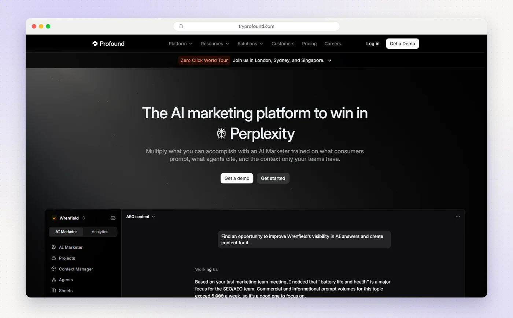
The friction is price. On Profound's pricing page, brands see two plans:
- Trial, free: 50 prompts run daily for 7 days, on ChatGPT, Gemini and Google AI Overviews. Trial users can't customise their prompts, and there are no exports or API.
- Enterprise, custom: up to 9 answer engines, a tailored prompt plan and dedicated support, priced after a demo.
Agencies get a published plan, Agency Growth, at $99 a month plus add-ons, such as $399 a month for each client workspace.
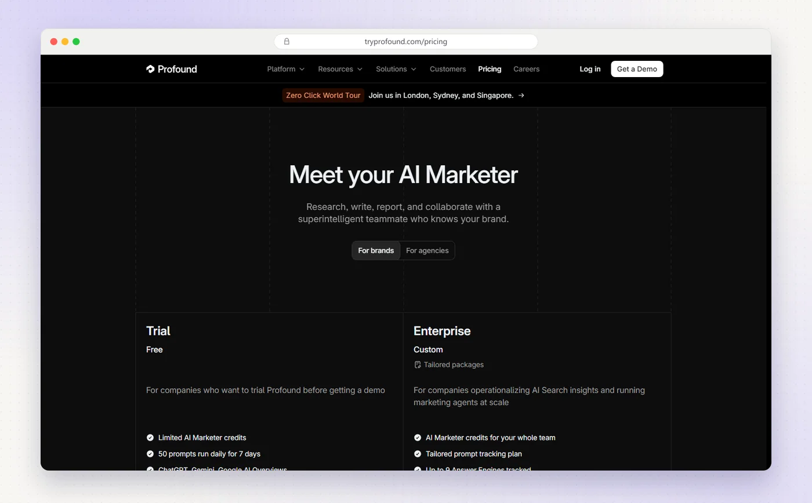
So if you want to start tracking this month without a sales cycle, or you want a number to put in a budget, you need an alternative.
Profound puts tracking, demand data, agents and crawler analytics in one platform, but brands only see a 7-day trial and a custom plan. Every tracker below shows a paid price before you talk to sales.
Profound alternatives at a glance
The same five questions for every option. Scroll the table sideways on a phone.
| Option | Best for | Starts at | Free option | Acts on the data |
|---|---|---|---|---|
| Peec AI | Daily tracking on 3 models you choose | $95/mo | Free trial | Recommended actions, Peec agent |
| Semrush AI Visibility Toolkit | Semrush users adding AI tracking | $99/mo per domain | Trial on Semrush One | AI-readiness site audit |
| Ahrefs Brand Radar | Researching any brand's AI visibility | $50/mo (custom prompts), $199/mo (AI Visibility Index) | Free AI checker, limited preview | Content gaps, mention opportunities |
| Otterly.AI | The lowest monthly price | $29/mo | Free trial | GEO audit, recommendations |
| AthenaHQ | A free plan, then content agents | Free, then $295/mo | Free Essential plan | Content agents, on and off-page actions |
| Scrunch | AI monitoring and site fixes (agent pages on Enterprise) | $250/mo | 7-day trial, card needed | Site audits, page optimisations |
| Rankscale | Every engine on every plan | $204/yr (Essentials), $99/mo (Pro) | 7-day Pro trial | Page audits, recommendations (beta) |
| LLMrefs | Keyword-based tracking on one flat plan | $79/mo | 7-day trial | Content gap insights |
| Fourward AI visibility check | Finding why AI can't name you | Free | Yes, no sign-up | Shows the gaps to fix |
Otterly.AI, Rankscale's yearly Essentials plan, Ahrefs' $50 custom prompt package and LLMrefs are the cheapest ways to start tracking. Peec AI is the closest to Profound's daily tracking. AthenaHQ is the only tracker with a free plan, and Fourward's check is the free option that diagnoses why you aren't named.
1. Peec AI
Best for Marketing teams that want daily tracking on the AI models they choose.
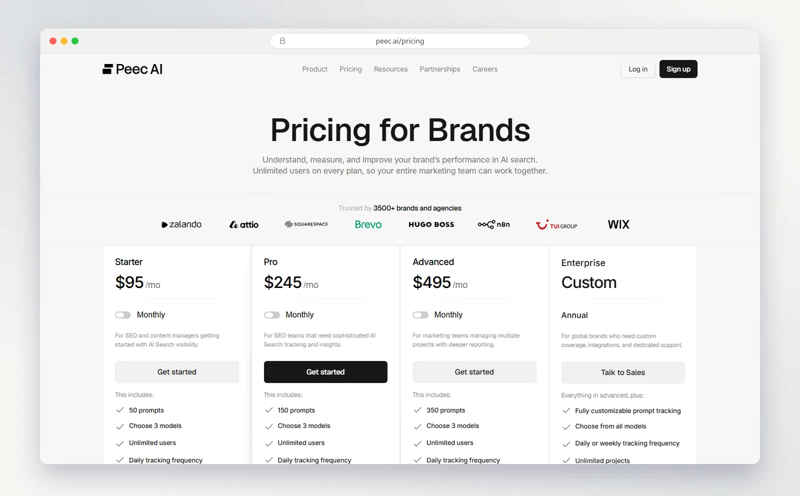
Peec AI is AI search analytics for marketing teams. It tracks your visibility, position, sentiment and share of voice every day against your competitors, and shows which sources AI cites.
- EnginesStarter, Pro and Advanced each track 3 models you choose from ChatGPT, AI Mode, AI Overviews, Copilot, Gemini and Naver AI. Extra models, including Perplexity, are paid add-ons, and Enterprise tracks up to 13. Pricing page
- Acts on the dataGap analysis, ranked recommended actions grouped into earned and owned, a Peec agent with custom skills, and a crawlability audit across 40+ bots.
- PricingStarter $95 a month for 50 prompts, Pro $245 for 150, Advanced $495 for 350, or $80, $205 and $420 a month billed yearly. Unlimited users on every plan.
- Free optionA free trial, with no credit card.
My take Peec is the closest thing to Profound's daily tracking with a price you can see first. Check which 3 models you need, because Perplexity is an add-on below Enterprise.
2. Semrush AI Visibility Toolkit
Best for Teams already on Semrush that want AI and SEO together.
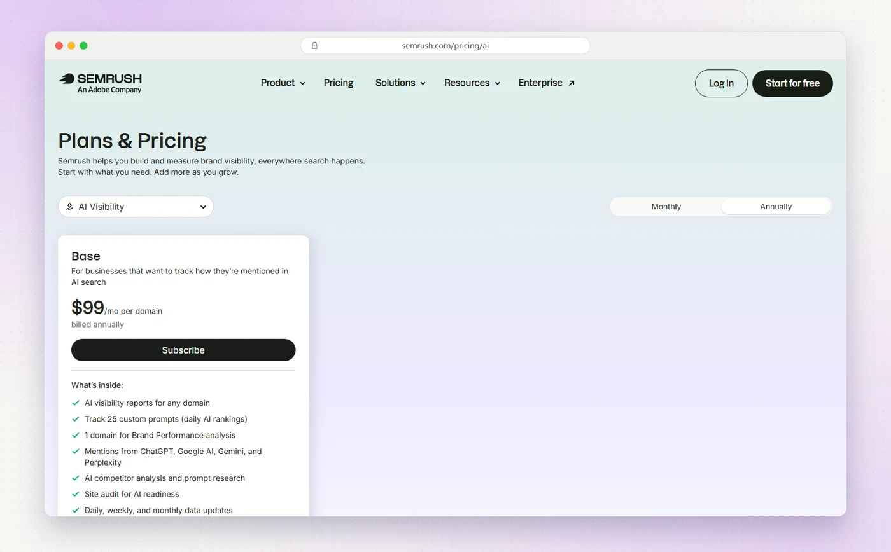
Semrush's AI Visibility Toolkit tracks how your brand shows up in AI answers: mentions, citations, share of voice and sentiment, next to the SEO data you already use.
- EnginesMentions from ChatGPT, Google AI, Gemini and Perplexity. Coverage varies by report, and Enterprise AIO adds Copilot, Grok, Claude and DeepSeek.
- Acts on the dataA site audit for AI readiness that checks 8 major AI crawlers, plus suggestions for earning mentions from cited sources.
- Pricing$99 a month per domain for 25 tracked prompts. Semrush One bundles SEO and AI from $199 a month.
- Free optionThe standalone toolkit has no free trial. Semrush One has a 7-day trial for new users.
My take If your team already lives in Semrush, adding AI tracking to the same login is the path of least resistance. Twenty-five prompts is tight, so plan for the add-on packs.
3. Ahrefs Brand Radar
Best for Researching any brand's AI visibility from a huge prompt index.
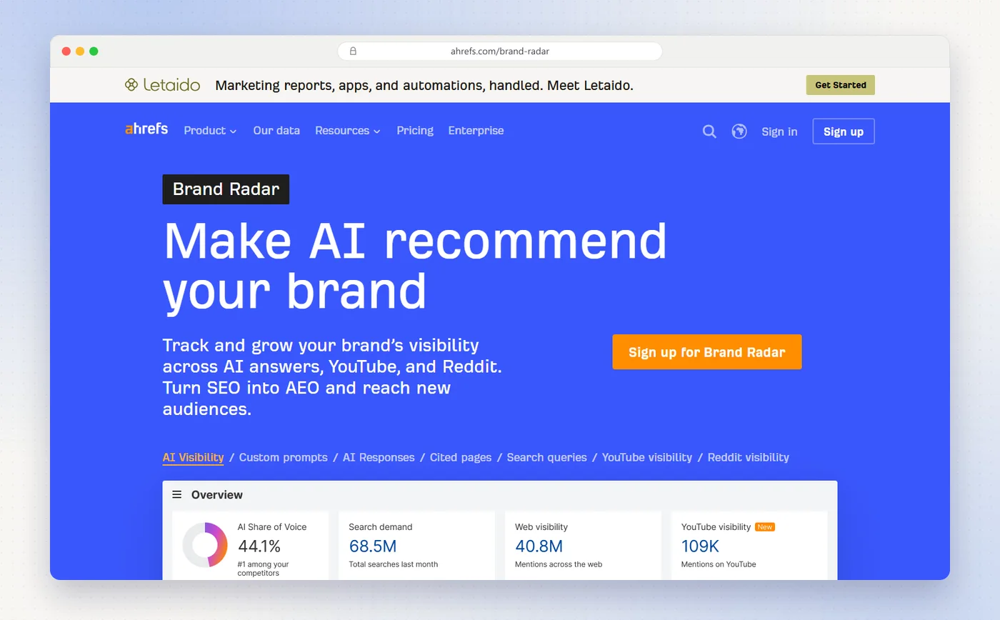
I use Ahrefs in my own audit work, and Brand Radar is its answer to AI search. It tracks mentions, citations, AI share of voice and estimated impressions, for your brand or any other.
- EnginesThe AI Visibility Index covers AI Overviews, AI Mode, ChatGPT, Perplexity, Gemini and Copilot. Custom prompts add Claude. Brand Radar page
- Acts on the dataFan-out queries that show content gaps, and cited pages where you can earn new mentions. You act on them with Ahrefs' keyword, backlink and site audit tools.
- PricingCustom prompts start at $50 a month for 2,500 checks, about 80 prompts daily on one platform, and every paid Ahrefs plan from Lite ($129 a month) includes some. The AI Visibility Index is $199 a month for each platform you pick, or $699 for all platforms.
- Free optionNo free trial listed, but a free AI Visibility Checker gives a limited preview.
My take Brand Radar's strength is the size of its index, more than 489 million prompts a month, which makes it great for competitor research. For tracking your own prompts, its custom prompt packages start at $50 a month for 2,500 checks, so compare checks per dollar with the dedicated trackers in this list.
4. Otterly.AI
Best for Small teams that want the lowest monthly price.
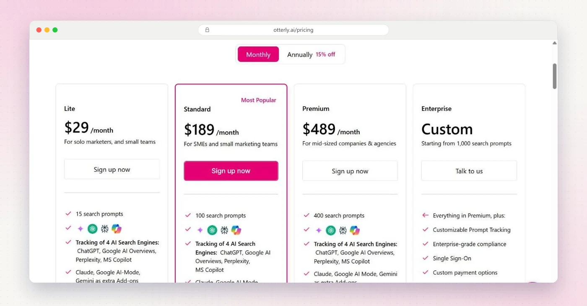
Otterly.AI calls itself the content intelligence platform for AI search. It tracks brand mentions, citations, sentiment, share of voice and average rank, daily.
- EnginesChatGPT, Google AI Overviews, Perplexity and Copilot are included. Claude, AI Mode and Gemini are paid add-ons. Pricing page
- Acts on the dataA GEO audit that tests 19 AI crawlers against your robots.txt and live server, a content audit, recommendations and citation gap analysis. Agent Analytics for AI bot traffic starts on Standard.
- PricingLite $29 a month for 15 prompts, Standard $189 for 100, Premium $489 for 400, with 15% off yearly. Unlimited team members.
- Free optionA free trial with no credit card needed.
My take Lite is the lowest monthly price in this guide. Fifteen prompts covers a handful of buying questions, so plan on Standard's 100 prompts once you track more topics.
5. AthenaHQ
Best for Teams that want a free plan first, then content agents.
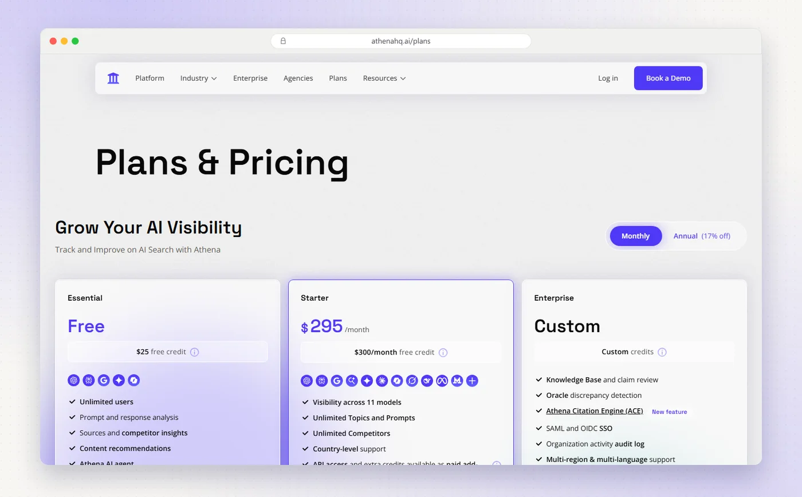
AthenaHQ is an AEO and GEO platform that tracks visibility, mentions, citations, sentiment and share of voice, then gives you agents to act on it.
- EnginesThe free plan covers ChatGPT, Perplexity, AI Overviews, Gemini and Copilot. Starter covers 11, adding AI Mode, Claude, Grok, DeepSeek, Meta AI and Mistral. Plans page
- Acts on the dataA content optimisation agent, on-page and off-page actions, citation intelligence, and smart robots.txt and llms.txt controls for AI crawlers.
- PricingEssential is free with 300 credits. Starter is $295 a month, or $245 billed yearly, with 3,600 credits and unlimited prompts. One credit is one AI response, and some engines cost 5 credits.
- Free optionThe Essential plan, with unlimited users.
My take AthenaHQ is the only tracker here with a free plan, which makes it an easy place to start. On Starter, watch the credits: Claude, Grok, DeepSeek, Meta AI and Mistral answers cost 5 credits each, against 1 for the others.
6. Scrunch
Best for Brands that want AI monitoring and site fixes, with AI-agent pages on Enterprise.
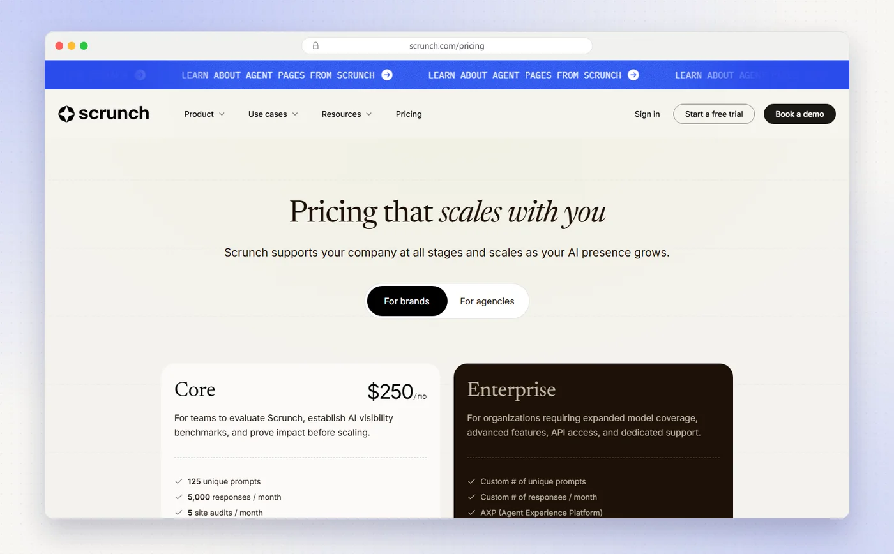
Scrunch gets your site AI-ready so you show up in answers and get cited. It tracks presence, position, sentiment and citations, plus AI bot traffic and AI referral traffic.
- EnginesCore tracks ChatGPT, Perplexity, Google AI Overviews and Copilot. Enterprise adds Claude, Gemini, Meta AI, AI Mode and Grok, for 9 in total.
- Acts on the dataSite audits, page optimisations and recommendations. On Enterprise, its Agent Experience Platform serves AI-optimised versions of your pages at the edge.
- PricingCore is $250 a month for 125 prompts, 5,000 responses, 5 site audits and 5 users. Enterprise is custom, and agencies start at $500 a month. Pricing page
- Free optionA 7-day trial of Core, which needs a credit card.
My take Scrunch's standout is technical: on Enterprise, it serves AI agents a version of your site built for them. Budget for a sales conversation if that's the reason you're here.
7. Rankscale
Best for Covering every engine on every plan, with credit-based pricing.
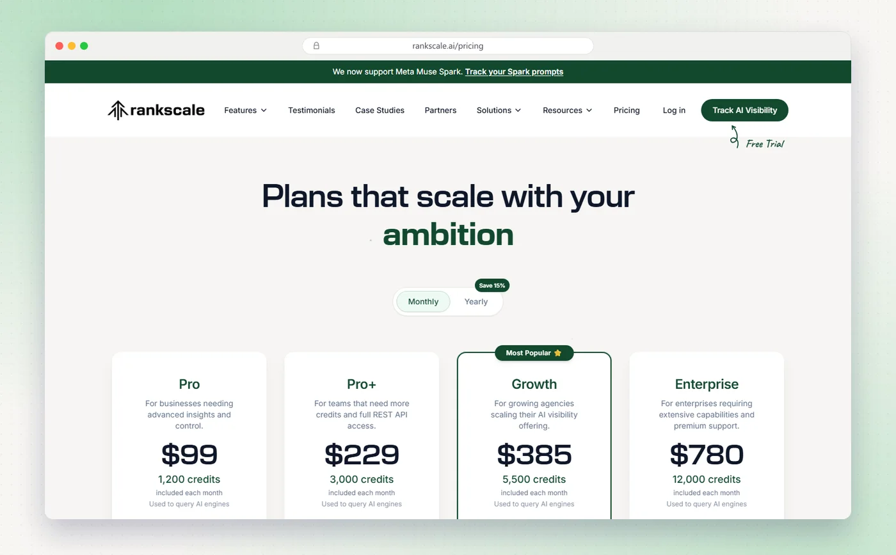
Rankscale is the AI visibility platform for agencies, enterprise and SEO teams. It tracks mentions, rankings, citations and sentiment, and rolls them into a visibility score and share of voice.
- Engines17+, including ChatGPT, AI Mode, AI Overviews, Gemini, Perplexity, Claude, DeepSeek, Mistral and Copilot. All engines are available on every plan. Pricing page
- Acts on the dataPage audits, an AI bot crawlability audit, prompt research and recommendations (beta).
- PricingCredit-based. Essentials is $17 a month, billed yearly at $204. Pro is $99 a month, Pro+ $229, Growth $385 and Enterprise $780, with 15% off yearly.
- Free optionA 7-day trial of Pro with limited credits.
My take Rankscale gives you the broadest engine coverage without add-on fees. Credits make costs flexible, so model your prompts times engines before you pick a plan.
8. LLMrefs
Best for Keyword-based tracking on one flat, low-priced plan.
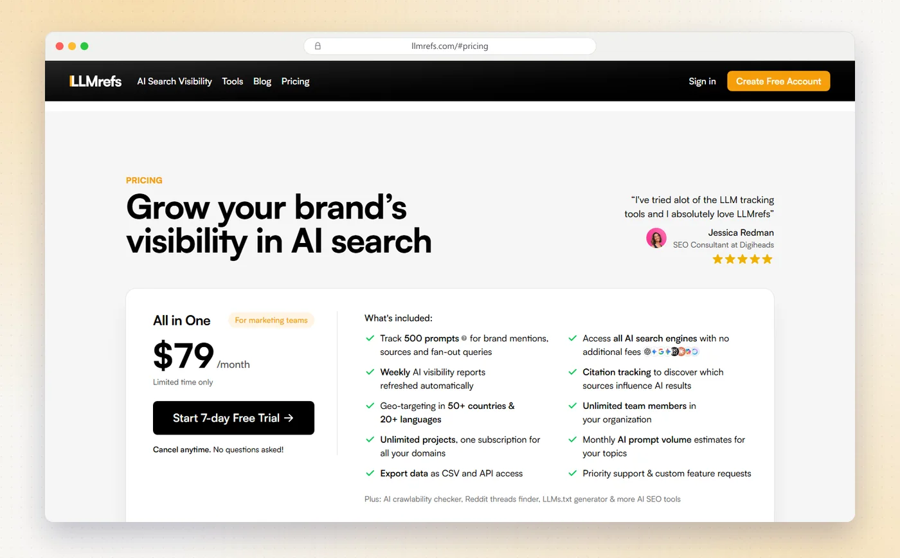
LLMrefs tracks keywords, not prompts. You add the keywords you care about, and it turns each one into the prompts people actually ask, then reports share of voice, position and citations.
- EnginesAll the engines it tracks, at no extra fee, including ChatGPT, AI Overviews, AI Mode, Gemini, Perplexity, Claude and Copilot.
- Acts on the dataContent gap insights, cited sources that point to outreach opportunities, and free tools such as an AI crawlability checker and an llms.txt generator.
- PricingOne plan, All in One, at $79 a month (marked limited time) for 500 prompts, unlimited team members and projects, CSV export and API access.
- Free optionA 7-day free trial.
My take If you think in keywords, as most SEO teams do, LLMrefs feels familiar fast. At $79 for 500 prompts, it gives you the most prompts per dollar in this guide.
9. Fourward AI visibility check
Best for Finding out why AI doesn't name you, free, in a minute.
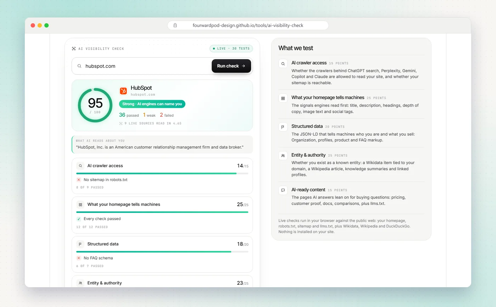
I built this check because every tracker answers the same question, "does ChatGPT mention us?", and most SaaS teams already know the answer is no. What they don't know is why.
You type in your domain and it runs 30 checks on what AI engines can read about your site, then gives you one score out of 100. It covers five areas:
- AI crawler accessWhether the crawlers behind ChatGPT search, Perplexity, Gemini, Copilot and Claude are allowed in, and whether your sitemap is reachable.
- Homepage signalsTitle, description, headings, depth of copy, image text and social tags.
- Structured dataOrganization, product and FAQ markup that tells machines who you are.
- Entity and authorityWhether Wikidata and Wikipedia know you, and which profiles link to you.
- AI-ready contentPricing, customer proof, docs, comparison pages and llms.txt.
It doesn't track prompts or answers over time, so it isn't a replacement for a tracker. It's the step before one: fix what blocks you, then measure.
My take Run it before you pay for anything. If your crawler access or entity signals fail, a tracker will just show you the same zero every day. Run the free check.
Starting plans compared
What the cheapest paid plan buys you, side by side. Prices are monthly unless noted, in US dollars, as published on 18 October 2026.
| Tool | Entry plan | Price | Tracking included | Engines |
|---|---|---|---|---|
| Rankscale | Essentials | $17, billed yearly ($204) | 120 credits a month | All, 17+ |
| Otterly.AI | Lite | $29 | 15 prompts | 4 |
| Ahrefs | Custom prompts, Basic | $50 | 2,500 checks (about 80 prompts daily, 1 platform) | 7 to choose from, checks shared |
| LLMrefs | All in One | $79 | 500 prompts | All tracked |
| Peec AI | Starter | $95 | 50 prompts | 3 you choose |
| Semrush | AI Visibility Toolkit | $99 per domain | 25 prompts | 5, varies by report |
| Scrunch | Core | $250 | 125 prompts | 4 |
| AthenaHQ | Starter | $295 | Unlimited prompts, 3,600 credits | 11 |
| Profound | Enterprise | Custom | Tailored | Up to 9 |
Three prices hide the real cost. AthenaHQ and Rankscale run on credits and Ahrefs' custom prompts on checks, so heavy engines and long prompt lists use them faster. Otterly.AI, Peec AI and Scrunch charge extra or move up a tier for more engines.
LLMrefs gives the most prompts per dollar, Otterly.AI the lowest monthly price, and Rankscale the most engines without add-ons. Profound is the only tool in this table where brands can't see a paid price before a demo.
Free check. 30 checks, one score out of 100, under a minute.
How to choose a Profound alternative
Pick the tool for the job you have now, not the one you might want in a year.
| Your situation | Start with | Why |
|---|---|---|
| You want daily tracking like Profound, at a visible price | Peec AI | Daily tracking, with AI Mode and Gemini among your 3 models, from $95 a month |
| You're on a small budget | Otterly.AI or LLMrefs | From $29, or 500 prompts for $79 |
| You want a free plan | AthenaHQ | Free Essential plan, five engines |
| You need the most engines, including Claude and DeepSeek | Rankscale | 17+ engines on every plan |
| Your team already uses Semrush or Ahrefs | Their AI add-on | Same login, same data |
| You don't know why AI never mentions you | Fourward AI visibility check | Free, and it shows the blockers first |
Questions I'd ask before buying
- Which engines do my buyers use? Pay for those, not for the longest logo row.
- How many prompts do I need? List your buying questions, multiply by your competitors' angles, and check it against the plan limits.
- Daily or weekly? Daily tracking matters for launches. Weekly is fine for trends.
- Who acts on the data? If nobody owns the fixes, the numbers won't move.
Choose by engines, prompt count and who will act on the data. A cheap tracker plus someone fixing the gaps beats an expensive tracker nobody acts on.
A full SEO, AEO and GEO audit, plus 30 minutes with our team to walk you through it.
FAQs
What is the best free alternative to Profound?
AthenaHQ has a free Essential plan that tracks five engines. Fourward's free AI visibility check shows why AI engines can't read or name your brand, and Ahrefs has a free AI Visibility Checker with a limited preview.
How much does Profound cost?
For brands, Profound's pricing page lists a free 7-day Trial with 50 prompts on three engines, and a custom-priced Enterprise plan. Agencies can buy Agency Growth at $99 a month plus add-ons.
What is the cheapest AI visibility tracker?
Of the tools in this guide, Otterly.AI has the lowest monthly price, $29 for 15 prompts. Rankscale's Essentials plan costs $204 a year, billed yearly only. LLMrefs gives the most prompts for the money, 500 for $79 a month.
Which Profound alternative tracks the most AI engines?
Rankscale lists 17+ engines and makes all of them available on every plan. AthenaHQ's Starter plan and LLMrefs also cover 10 or more, including Claude, Grok and DeepSeek.
Do I need a tracker, or someone to fix my AI visibility?
Both, in that order of urgency. A tracker shows whether AI names you. Getting named takes crawler access, structured data, pages that answer buyer questions and mentions on the sites AI cites. Start with a free check to see which of those is missing.
Why does AI search matter for B2B SaaS?
Google's AI Overviews now reach more than 2.5 billion people a month, and AI Mode more than 1 billion. When buyers ask AI for a tool like yours, the brands in the answer get the shortlist.
Sources
- Profound pricing and Answer Engine Insights, tryprofound.com.
- Peec AI pricing, peec.ai.
- Otterly.AI pricing and AI search optimization, otterly.ai.
- Scrunch pricing and free trial FAQ, scrunch.com.
- AthenaHQ plans and credit calculator, athenahq.ai.
- LLMrefs, llmrefs.com.
- Rankscale pricing, rankscale.ai.
- Semrush AI Visibility Toolkit pricing and knowledge base, semrush.com.
- Ahrefs Brand Radar and pricing, ahrefs.com.
- Google I/O 2026 opening keynote, Google, May 2026.